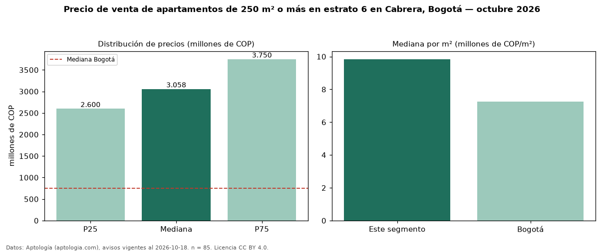

Precio de venta de apartamentos de 250 m² o más en estrato 6 en Cabrera, Bogotá — octubre 2026
En Cabrera, Bogotá, la mediana de precio de venta de apartamentos de 250 m² o más en estrato 6 es COP 3,06 mil millones, según 85 avisos vigentes. Frente a la mediana de los apartamentos en estrato 6 en venta de Cabrera (COP 2,67 mil millones, n = 186), queda 14 % por encima; este segmento reúne el 46 % de esos avisos. Por metro cuadrado, la mediana es COP 9,84 millones/m² (n = 85), 5 % por debajo de los apartamentos en estrato 6 en venta de Cabrera (COP 10,40 millones/m²). El área mediana anunciada es 300 m². El segmento con más oferta es el de 3 o más habitaciones (82 avisos, mediana COP 3,08 mil millones). La administración mediana declarada es COP 2,30 millones al mes (n = 79). La mediana de todos los apartamentos en venta de Bogotá es COP 750 millones (+308 % de diferencia). La mitad central de los avisos va de COP 2,60 mil millones a COP 3,75 mil millones (razón 1,4), una dispersión moderada. Datos: Aptología (aptologia.com), CC BY 4.0 — https://www.aptologia.com/venta/bogota/cabrera. Archivos: PDF, CSV con las cifras y gráfica PNG.

| Avisos únicos | 85 |
|---|---|
| Percentil 25 | COP 2.600.000.000 |
| Mediana | COP 3.057.633.590 |
| Percentil 75 | COP 3.750.000.000 |
| Mediana por m² | COP 9.842.519 |
Fuente: avisos vigentes de portales inmobiliarios recopilados por Aptología, deduplicados (mínimo 30 avisos únicos por celda). Precios pedidos, no cerrados. Fecha: 2026-10-18.